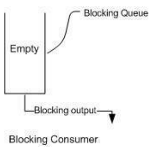
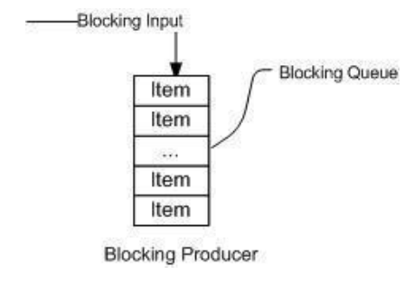
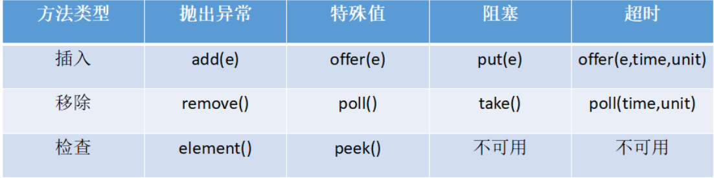

一、阻塞队列：用于保存等待执行的任务。在阻塞队列中，线程阻塞的两种情况：
1.当队列中没有数据的情况下，消费者端的所有线程都会被自动阻塞（挂起），直到有数据放入队列。

2.当队列中填满数据的情况下， 生产者端的所有线程都会被自动阻塞，知道队列中有空位置，线程被自动唤醒。

二、阻塞队列的主要方法

抛出异常：抛出一个异常；
特殊值：返回一个特殊值（null或false，视情况而定）
阻塞：在成功操作之前，一直阻塞线程
超时：放弃前只在最大的时间内阻塞
插入操作
1）public abstract boolean add(E paramE)：将指定元素插入此队列中（如果立即可行且不会违反容量限制），成功是返回true，如果当前没有可用空间，则抛出异常。如果钙元素是null，则会抛出NullPointerException异常。
2）public abstract boolean offer(E paramE)：将指定元素插入此队列中（如果立即可行且不会违反容量限制），成功时返回true，如果当前没有可用的空间，则返回false。
3）public abstract void put(E paramE)throws InterruptedExcaption：将指定元素插入队列中，将等待可用的空间（如果有必要）。
1 public void put(E paramE) throws InterruptedException {
2 checkNotNull(paramE);
3 ReentrantLock localReentrantLock = this.lock;
4 localReentrantLock.lockInterruptibly();
5 try {
6 while (this.count == this.items.length)
7 this.notFull.await();//如果队列满了，则线程阻塞等待
8 enqueue(paramE);
9 localReentrantLock.unlock();
10 } finally {
11 localReentrantLock.unlock();
12 }
13 }4）offer(E o,long timeout, TimeUnit unit)：可以设定等待的时间，如果指定的时间内，还不能往队列中加入BlockingQueue，则返回失败。
获取数据操作
1）poll(time)：取走BlockingQueue里排在首位的对象，若不能立即取出，则可以等time参数规定的时间，取不到时返回null；
2）poll(long timeout,TimeUnit unit)：从BlockingQueue取出一个队首的对象，如果在指定的时间内，队列一旦有数据可取，则立即返回队列中的数据。否则直到时间超时还没有数据可取，返回失败；
3）take()：取走BlockingQueue里排在首位的对象，若BlockingQueue为空，阻断进入等待状态直到BlockingQueue有新的数据被加入；
4）drainTo()：一次性从BlockingQueue获取所有可用的数据对象（还可以指定获取数据的个数），通过该方法，可以提升获取数据效率，不需要多次分批加锁或释放锁。
三、Java中的阻塞队列
1. ArrayBlockingQueue：由数组结构实现的有界阻塞队列。此队列按照先进先出（FIFO）的原则对元素进行排序。默认情况下不保证访问者公平的访问队列，所谓的公平访问队列是指阻塞的所有生产者线程或消费者线程，当队列可用时，可以按照阻塞的先后顺序访问队列，即先阻塞的生产者线程，可以先往队列里插入元素，先阻塞的消费者线程，可以先从队列里获取元素。通常情况下为了保证公平性会降低吞吐量。我们可以使用以下代码创建一个公平的阻塞队列：
ArrayBlockingQueue fairQueue = new ArrayBlockingQueue(1000,ture);
2. LinkedBlockingQueue：由链表结构组成的有界阻塞队列。同ArrayBlockingQueue类似，此队列按照先进先出（FIFO）的原则对元素进行排序。而LinkedBlockingQueue之所以能够高效地处理并发数据，还因为其对于生产者端和消费者端分别采用了独立的锁来控制数据同步，在高并发的情况下生产者和消费者可以并行地操作队列中的数据，以此来提高整个队列的并发性能。吞吐量通常要高于ArrayBlockingQueue。
LinkedBlockingQueue会默认一个类似无限大小的容量（Integer.MAX_VALUE）。
3. PriorityBlockingQueue：支持优先级排序的无界阻塞队列。默认情况下元素采取升序排列。可以自定义实现compareTo() 方法来指定元素进行排序规则，或初始化PriorityBlockingQueue时，制定构造函数Comparator来对元素进行排序。需要注意的是不能保证同优先级元素的顺序。
4. DelayQueue：使用优先级队列实现的支持延时获取元素的无界阻塞队列。队列使用PriorityQueue来实现。队列中的元素必须实现Delayed接口，在创建元素是可以指定多久才能从队列中获取当前元素。只有在延迟期满时才能从队列中提取元素。我们可以将DelayQueue运用在以下场景中：
1）缓存系统的设计：可以用DelayQueue保存缓存元素的有效期，使用一个线程循环查询DelayQueue，一旦能从DelayQueue中获取元素时，表示缓存有效期到了。
2）定时任务调度：使用DelayQueue保存当天将会执行的任务和执行时间，一旦从DelayQueue中获取到任务就开始执行，从比如TimerQueue就是使用DelayQueue实现的。
5. SynchronousQueue：是一个不存储元素的阻塞队列。每个插入操作必须等到另一个线程调用移除操作，否则插入操作一直处于阻塞状态。SynchronousQueue负责把生产者线程处理的数据直接传递给消费者线程。队列本身并不存储任何元素，非常适合于传递性场景，比如在一个线程中使用的数据，传递给另外一个线程使用，SynchronousQueue的吞吐量高于LinkedBlockingQueue和ArrayBlockingQueue。
6. LinkedTransferQueue：由链表结构组成的无界阻塞队列。相对于其他阻塞队列，LinkedTransferQueue多了tryTransfer和transfer方法。
1）transfer方法：如果当前有消费者正在等待接收元素（消费者使用take方法或带时间限制的poll方法时），transfer方法可以把生产者传入的元素立刻transfer（传输）给消费者。如果没有消费者在等待接收元素，transfer方法会将元素存放在队列的tail节点，并等待该元素被消费者消费了才返回。
2）tryTransfer方法：是用来试探下生产者传入的元素是否能直接传给消费者。如果没有消费者等待接收元素，则返回false。tryTransfer方法与transfer方法的区别是tryTransfer方法无论消费者是否接收，方法立即返回，而transfer方法是必须等到消费者消费了才返回。对于带有时间限制的tryTransfer(E o,long timeout,TimeUnit unit)方法，则是试图把生产者传入的元素直接传给消费者，但是如果没有消费者消费该元素则等待指定的时间再返回，如果超时还没消费元素，则返回false，如果在超市时间内消费了元素，则返回true。
7.LinkedBlockingDeque：由链表结构组成的双向阻塞队列。所谓双向队列指可以从队列的两端插入和移除元素。双端队列因为多了一个操作队列的入口，在多线程同时入队时，也就减少了一半的竞争。相比其他的阻塞队列，LinkedBlockingDeque多了addFirst，addLast，offerFirst，offerLast，peekFirst，peekLast等方法，以First单词结尾的方法，表示插入、获取（peek）或移除双端队列第一个元素。以Last单词结尾的方法，表示插入、获取或移除双端队列的最后一个元素。另外插入方法add等同于addLast，移除方法remove等同于removeFirst。但是take方法却等同于takeFirst，使用时还是用带有First和Last后缀的方法更清楚。在初始化LinkedBlockingQueue时可以设置容量防止其过度膨胀。另外双向阻塞队列可以运用在“工作窃取”模式中。